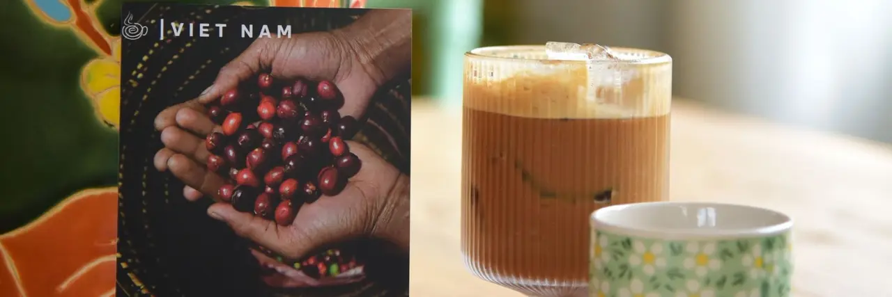

Cà phê Sài Gòn, bắt đầu từ một ly phin
Ảnh, video ngắn và âm thanh giúp bạn học pha và thưởng thức cà phê, xem mượt trên điện thoại.
Xem thư việnVideo giới thiệu
Nổi bật

Cách pha phin – video từng bước, có phụ đề. 
Hạt cà phê – robusta Lâm Hà, Lâm Đồng. 
Quán cà phê – không khí quán và âm thanh.